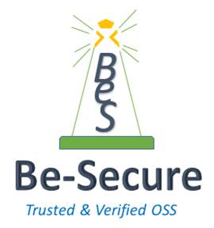

|  |
BeSman is a command-line utility to provision customized environments for each open source tech stack. These environments are known as BeSman environments. We have two types of BeSman environments – dev and sec environments.
The development environment is pre-bundled with all tools and dependencies that a developer would need to work on a specific open source project. Similarly, the sec environments are pre-bundled with a set of open source security tools that a security tester can leverage to conduct planned security assessment.
Why do we need BeSman utility
How can BeSman utility help
Installing BeSman using oah-shell
We will be using oah-installer, a component of OpenAppHack(OAH), to install oah-shell in the local system and using it to bring up oah-bes-vm with BeSman installed.
Pre-requisites
Installation
Open your terminal
Install oah-shell
curl -L https://raw.githubusercontent.com/Be-secure/oah-installer/master/install.sh | bash
Confirm the installation oah-shell by executing the below command which would list various oah commands
oah
Execute the below command to get the list of environments
oah list
Note: Make sure oah-bes-vm is listed. If not, execute step 2 and run the below command
source ${OAH_DIR}/bin/oah-init
Setup oah-bes-vm for BeSman by executing the below command.
oah install -v oah-bes-vm
Testing
Install an environment
bes install -env [environment_name] -V [version]
Run the below command to get the list of available enviornments
bes list
Uninstall an environment
bes uninstall -env [environment_name] -V [version]
Demo